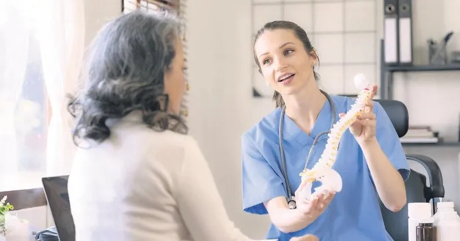
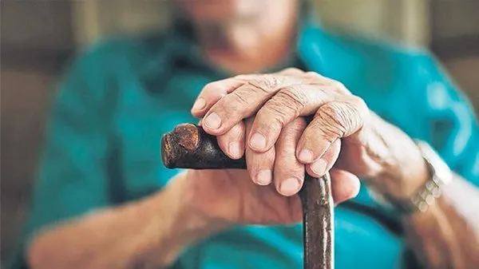
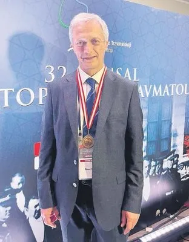

Halk arasında kemik erimesi olarak bilinen osteoporoz ciddi bir sağlık sorunu. Uzmanlar, özellikle iş işten geçmeden yani kemikler kırılmadan önlem alınması gerektiğini belirtiyor. Aksi halde kemik kırılması olduktan sonra ileri yaş hastaların 3’te biri kısa süre içinde hayatını kaybedebiliyor.

Türk Ortopedi ve Travmatoloji Birliği Derneği (TOTBİD) tarafından düzenlenen 32. Ulusal Türk Ortopedi ve Travmatoloji Kongresi, Antalya'da yapıldı. Kongre Başkanı Prof. Dr. Öner Şavk, halk arasında yaygın olarak görülen kemik erimesi yani osteoporoz hakkında önemli bilgiler verdi.
Prof. Dr. Şavk, "50 yaş üzeri her 3 kadından ve her 5 erkekten birinde ortaya çıkan kemik erimesi, yaygın kemik ağrısı yanında kırıkların da en önemli nedenidir. Toplumda görülme sıklığı bilinen pek çok hastalıktan çok daha fazla olan kemik erimesi, ciddi bir halk sağlığı sorunu olarak karşımıza çıkmaktadır. Kemik erimesi tüm kemiklerde olabilmekle beraber en sıklıkla omurlarda, kalçada, el bileklerinde ve omuzlarda kırıklara yol açarak sorun oluşturur" dedi.

Genellikle yaşlı hastalığı olarak bilinse de genetik hastalıklar, bazı kan hastalıkları, alkol kullanımı ve hareketsiz yaşam tarzı gibi nedenlere bağlı olarak daha erken yaşlarda da görülebileceğini belirten Prof. Dr. Şavk, şöyle dedi: "Sinsi olarak seyreden hastalık ileri yaşlarda sırt ve bel ağrısı, kamburluk, boy kısalması, küçük travmalar ile oluşan kırıklar ile kendini gösterir. Bu bulguların tedavisi kolay ve her zaman yüz güldürücü değildir. Bu nedenle kemik erimesi olabileceği düşünülen kişilerin kırıklar oluşmadan değerlendirilmesi önemlidir."

Kemik kırılması yaşayan hastaların 3'te birinin kısa sürede kaybedildiğini de söyleyen Prof. Dr. Şavk, "Bu rahatsızlığa yakalanan kişilerin tedavi edilmeleri çok önemli. Büyük çoğunluğu ileri yaş grubunda olan, kalçası, beli, omzu, kırılmış hastayı yatırmak, maliyeti karşılamak tedavi edilecek eğitimli hekimleri bulmak çok zor. Kemik erimesi rahatsızlığını önceden tespit ederek, kurtarabildiğimiz kadarını önleyici tedbirlerle yapmak zorundayız. Kemik erimesi ileri yaş hastalarda olduğu için bunların yanına ilave hastalıklarında eklenmesiyle, bu hastalarda ölüm oranı fazla oluyor. Kemik kırılması olduktan sonra ileri yaş hastaların 3'te biri kısa süre içinde kaybedilebiliyor. Geri kalan 3'te biri bir yıllık süre içinde araya giren başka hastalıklarla kaybedilebiliyor. Diğerleri ise eski performanslarına dönememektedir. Bu grubu 65-70 yaş olarak değerlendirebiliriz" dedi.
Ülkemızdekı yaşlı nüfusun giderek artması nedeni ile kemik erimesinin giderek daha büyük bir sorun olduğuna dikkat çeken Prof. Dr. Şavk, şöyle dedi: "Kemik erimesi olan her hasta, buna bağlı olarak gelişen kırığı nedeni ile ameliyat edilebileceği hastanede bir yatağa, ameliyatı gerçekleştirecek bilgi birikimine sahip ortopedi uzmanına ve sonraki rehabilitasyon sürecini yürütebilecek fizyoterapiste gereksinim gösterir. Giderek hem hastanelerimizde bu hastalar için uzun süre tedavi görecekleri, ameliyat olabilecekleri yerleri sağlayabilmek zorlaşmakta hem de artan tedavi maliyeti azımsanmayacak yük oluşturmaktadır. Kemik erimesinin yol açtığı kırıkların ameliyat yöntemleri, ameliyat sırasında kullanılan malzemeler ve ameliyat sonrası bakımı diğer kırıklardan farklılık gösterir."
TANIDA radyolojik görüntüleme, kemik mineral yoğunluğu ölçümü ve diğer bazı laboratuvar testlerinin gerekli olduğunu söyleyen Prof. Dr. Şavk, "Kemik erimesi önlenebilir bir hastalıktır. Çocukluktan itibaren sürdürülen kalsiyum ve D vitamininden zengin beslenmenin önemi büyüktür. Ayrıca düzenli egzersiz ile elde edilen belirgin kas kütlesi de kemik dokusunun kalitesini arttırarak ileri yaşlardaki kırılganlık riskini büyük ölçüde azaltacaktır" dedi.
KEMİK erimesi tanısı konduktan sonra tedavi edilebilen bir hastalık olduğuna da dikkat çeken Prof. Dr. Şavk, "Fakat yapılan tedaviler kemiğin kırılganlığını azaltsa da tümüyle ortadan kaldıramaz. Tedavi amaçlı verilen ilaçları düzenli ve uzun süre kullanmak gerekir. Ayrıca yaşam tarzı değişikliği yapmak, yaşamın hareket olduğunu unutmayarak düzenli egzersizlere başlamak da önemlidir" dedi.